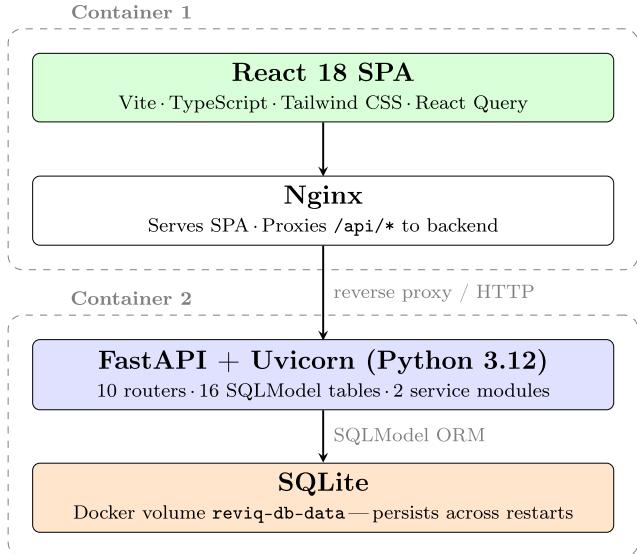
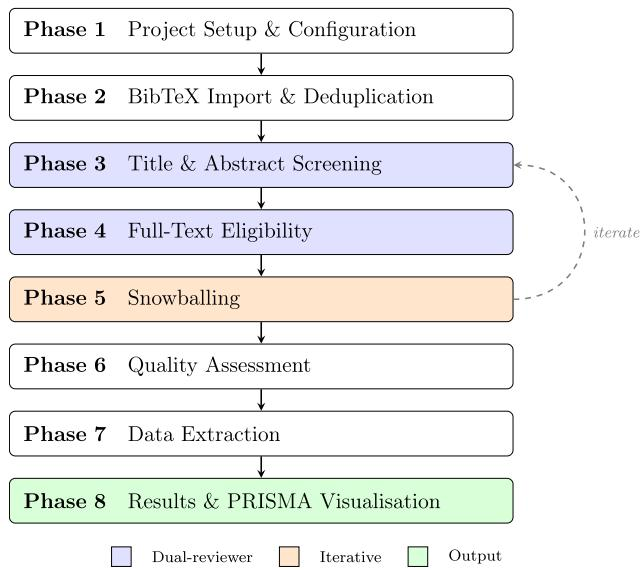
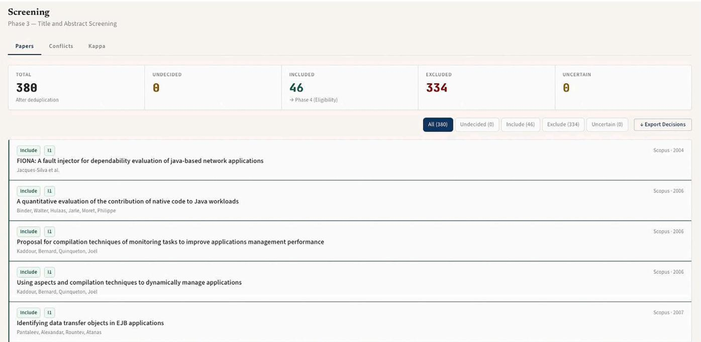
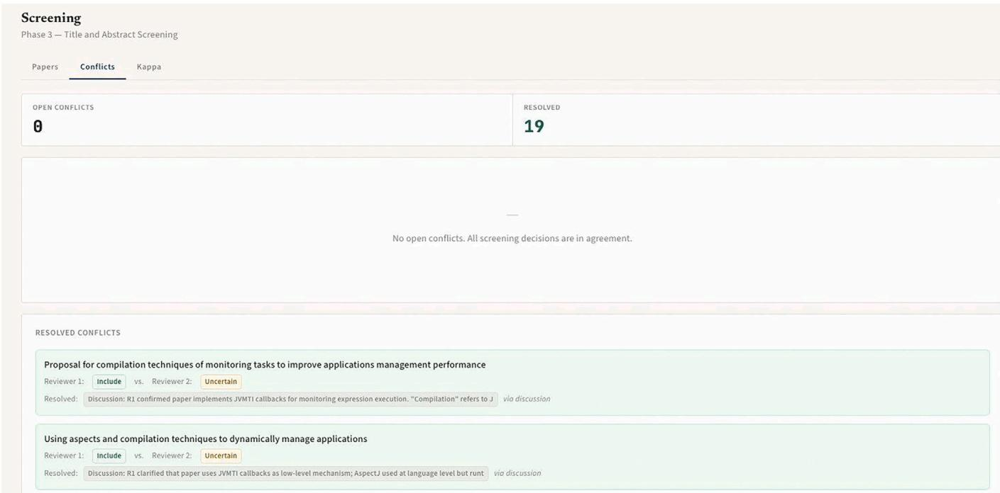
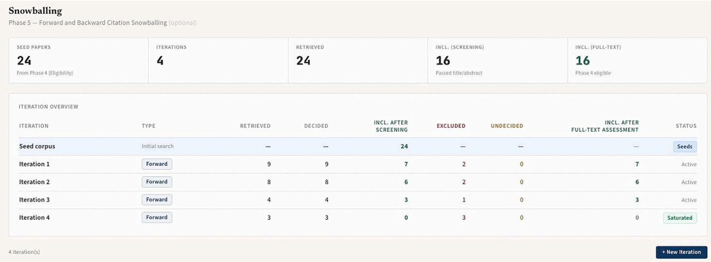
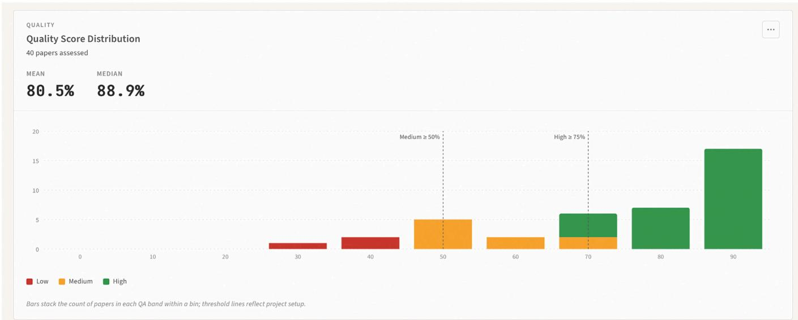
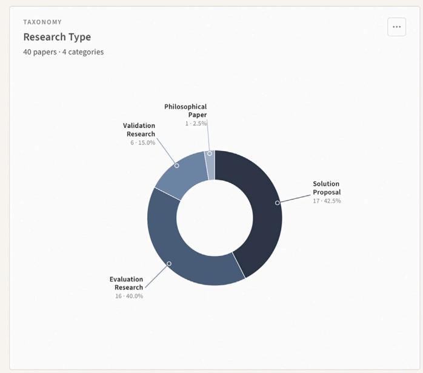
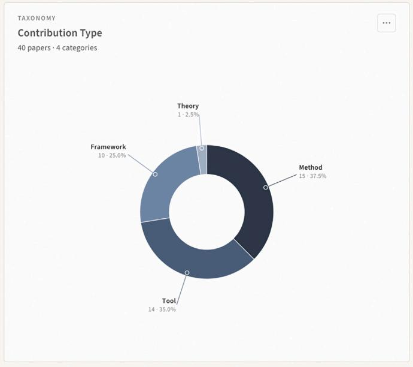
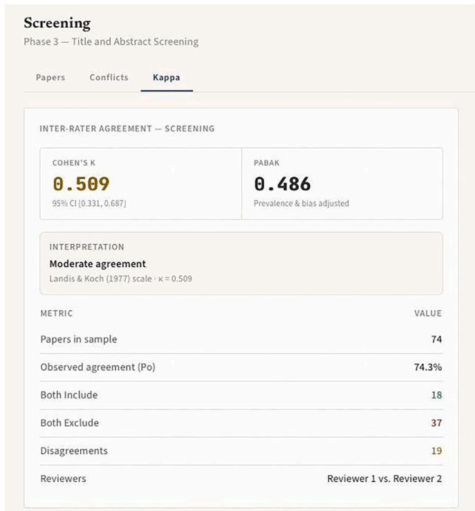
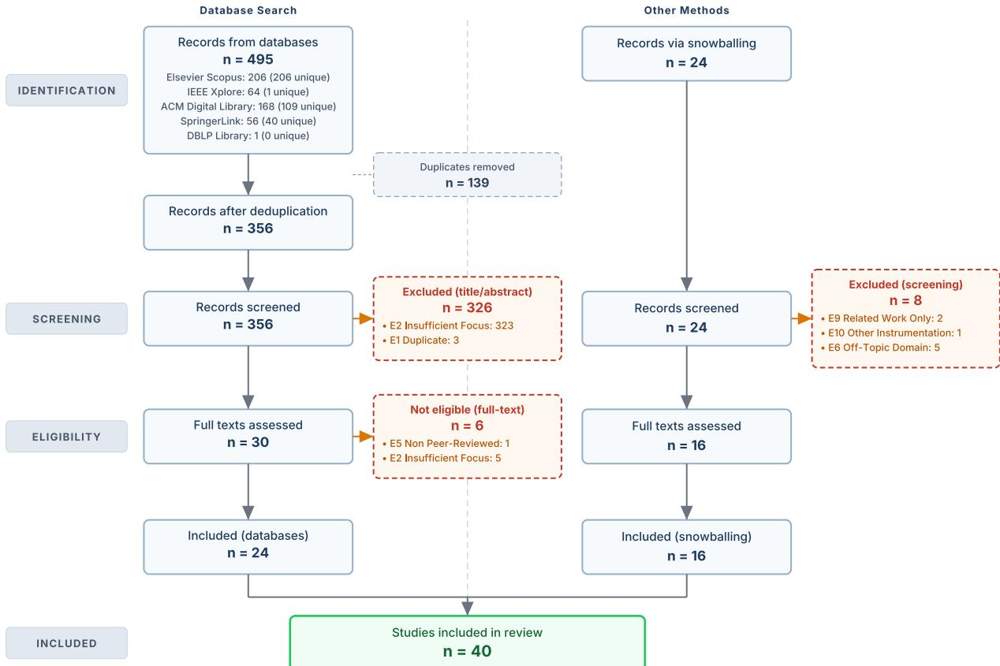

ReviQ: A systematic literature review workbench¶
Philipp Haindl iD¶
University of Applied Sciences St. Pölten, Department of Computer Science & Security, St. Pölten, Austria
A R T I C L E I N F O¶
Keywords: Evidence-based software engineering PRISMA Reproducibility Research methodology tool Systematic literature review
A B S T R A C T¶
We present ReviQ, an open-source workbench for systematic literature reviews (SLRs) that runs locally in Docker and does not require cloud accounts. The tool implements all eight phases of the Kitchenham and Charters (2007) methodology: project setup, BibTeX import with cross-database deduplication, title/abstract screening, full-text eligibility, snowballing with saturation tracking, quality assessment, configurable data extraction, and results visualization, including PRISMA 2020 flow diagrams. Reviewer agreement is quantified through Cohen’s � with asymptotic confidence intervals and PABAK, which is computed directly from the stored decisions. The complete project state—decisions, conflict resolutions, QA scores, extraction records, taxonomies, and source BibTeX files— can be exported as a versioned replication package and re-imported into another ReviQ instance, enabling third parties to audit or continue a review. We validated ReviQ by conducting a complete SLR on a software engineering topic across five databases, four snowballing iterations, 519 retrieved and 356 screened papers, involving two reviewers and resulting in 40 included studies. ReviQ is released under the GPL v3 license
Current code version¶
Table 1 summarises the current code metadata for ReviQ, including the version, repository link, license, languages and runtimes used, and supported platforms.
Table 1¶
| Code metadata. | ||
| Nr. | Code metadata description | Metadata |
| C1 | Current code version | v1.0.0 |
| C2 | Permanent link to code/repository | https://github.com/philipphaindl/ReviQ |
| C3 | Legal Code License | GNU General Public License v3 |
| C4 | Code versioning system used | Git |
| C5 | Software code languages, tools, and services used | Python 3.12, FastAPI, SQLite, SQLModel, React 18, TypeScript, Vite, Tailwind CSS, Docker, Nginx |
| C6 | Compilation requirements, operating environments & dependencies | Docker and Docker Compose. Runs on Windows, macOS, and Linux. |
| C7 | Link to developer documentation/manual | Included in README.md in the repository |
| C8 | Support email for questions | philipp.haindl@ustp.at |
1 . Motivation and significance¶
The systematic literature review (SLR), as outlined by Kitchenham and Charters [1] within the context of evidence-based software engineering [2], comprises three main phases. Planning establishes the research questions, the search strategy across the chosen databases, and the inclusion/exclusion criteria. Conduct covers the execution of the database searches and the processing of candidates through screening by at least two independent reviewers, full-text eligibility assessment, optional citation snowballing [3], quality assessment, and structured data extraction. Reporting synthesises the extracted data and documents the entire process—most prominently via a Preferred Reporting Items for Systematic Reviews and Meta-Analyses (PRISMA) 2020 [4,5] flow diagram—so that the review can be audited and replicated. Each phase generates artefacts—decision logs, conflict records, agreement statistics, and PRISMA counts among them—which must be internally consistent and accessible for replication.
Table 2
Feature comparison of SLR tools. ∙ = supported, ◦ = partial, – = not supported.
| Feature | Rayyan | StArt | Parsifal | Covidence | ReviQ |
| Open source | • | • | • | - | • |
| Runs locally | - | • | - | - | • |
| BibTeX deduplication | • | ○ | • | • | • |
| Dual-reviewer screening | • | ○ | ○ | • | • |
| Conflict resolution UI | ○ | - | - | • | • |
| Cohen's κ / PABAK | - | - | - | - | • |
| Snowballing tracking | - | • | - | - | • |
| Quality assessment | - | • | • | ○ | • |
| Configurable extraction | - | ○ | ○ | • | • |
| PRISMA 2020 diagram | - | - | - | • | • |
| Replication-package export | - | - | - | - | • |
Since 2007, SLRs have become a widely adopted research methodology in the field of software engineering [6]. Subsequent work has highlighted both their increasing utilization and the recurring methodological challenges associated with them [7,8]. A primary concern in this context is the issue of tooling. When we conducted an SLR on a JVM-related topic, we initially documented decisions using a shared spreadsheet. It soon became evident that this approach was inadequate—parallel edits resulted in merge conflicts, the � computation required re-derivation with each decision change, and the PRISMA numbers in the manuscript frequently diverged from the actual counts until discrepancies were identified. This experience, which appears to be common among software engineering researchers [9,10], prompted the development of ReviQ.
Numerous tools have been developed to address various aspects of this issue. Marshall et al. [11] ofer a systematic feature analysis of existing SLR tools, while Al-Zubidy et al. [12] identify a prioritized set of value-added requirements for SLR tooling infrastructure. Rayyan [13] has emerged as the most widely adopted screening tool, featuring an intuitive web interface with semi-automated duplicate detection and label-based filtering; however, it is cloud-hosted and does not support phases beyond screening. StArt [14] encompasses the entire systematic reviewing process, including quality assessment (QA), and has recently incorporated snowballing support; nonetheless, it does not compute inter-rater agreement nor generate PRISMA 2020 diagrams. Parsifal1 provides a web-based, protocol-driven workflow with quality assessment but lacks snowballing, � calculation, and any form of replicationpackage export. Covidence2 is extensively utilized in the health sciences and ofers a refined dual-reviewer workflow with PRISMA output, yet it is a commercial cloud product with a free tier limited to a single review. Table 2 presents a comparison of features across these tools.
We developed ReviQ to address the existing gaps: a single, locallydeployable application that encompasses all phases of the Kitchenham and Charters methodology, calculates � with confidence intervals, generates PRISMA 2020 diagrams from live data, and consolidates the entire project state into a portable replication package. The tool operates within Docker, stores all data in a local SQLite database, and does not connect to any external servers.

Fig. 1. Two-container architecture of ReviQ. Container 1 serves the React frontend via Nginx; Container 2 runs the FastAPI backend with a persisted SQLite database. Both run on the researcher’s machine.
The remainder of the paper proceeds as follows. Section 2 describes the architecture of ReviQ and its eight functional phases. Section 3 il lustrates ReviQ on a real validation SLR involving five databases, four snowballing iterations, and two independent reviewers. Section 4 discusses the tool’s research and educational impact, its positioning against related tools, and current limitations. Section 5 concludes.
2 . Software description¶
2.1 . Software architecture¶
ReviQ is a Docker [15] application comprising two containers, as illustrated in Fig. 1. The first container operates Nginx, which serves the React single-page application and reverse-proxies /api/* requests to the second container, a FastAPI [16] service implemented in Python 3.12. All state data is maintained within a SQLite database on a designated Docker volume (reviq-db-data), ensuring data persistence across container rebuilds. Initiating the application merely requires executing docker compose up --build; there is no necessity for configuring accounts, application programming interface (API) keys, or external databases.
The backend comprises ten route modules—one per SLR phase plus cross-cutting concerns like kappa, export, and report—and two service modules (bibtex_service for parsing and deduplication, kappa_service for agreement statistics). The database schema is structured with 16 SQLModel [17] tables that align with the SLR process, encompassing projects, reviewers, inclusion/exclusion/QA criteria, papers, reviewer decisions, final decisions, conflict logs, QA scores, extraction fields and records, snowballing iterations, taxonomy entries, database search strings, and paper–database links. The frontend operates exclusively through the REST API, with React Query managing all data retrieval and cache invalidation, thereby ensuring that the user interface is promptly updated upon the recording of a decision.
2.2 . Software functionalities¶
ReviQ realises the SLR methodology as eight sequential phases that map onto the three main phases introduced in Section 1: Phase 1 (project setup) corresponds to Planning; Phases 2–7 (import, screening, eligibility, snowballing, quality assessment, and data extraction) constitute Conduct; and Phase 8 (results and PRISMA visualisation) constitutes Reporting. Fig. 2 illustrates the eight-phase ReviQ workflow, highlighting which phases are dual-reviewer activities, the iterative snowballing loop, and the final output phase. The sidebar of the application organizes these phases in the same sequential order. At the top of each phase page, a statistics bar displays real-time counts (retrieved, unique, duplicates, included, excluded, undecided), providing the reviewer with a continuous sense of progress.

Fig. 2. Eight-phase SLR workflow following Kitchenham and Charters [1]. The dashed arrow indicates that snowballing [3] feeds new candidates back into screening.
Phase 1—Setup. The researcher initiates a project by establishing a title, description, and the name of the lead researcher, and registers up to five reviewers. Inclusion and exclusion criteria are delineated for each phase (screening or full-text), with each criterion assigned a label (e.g., E3) and a concise, human-readable name that subsequently appears in the exclusion breakdown of the PRISMA diagram. Quality assessment criteria are configured with a maximum score of either 0.5 or 1.0. Taxonomy categories (e.g., “Research Type” with values such as “Evaluation Research”, “Solution Proposal”, etc.) and custom extraction fields (free text, number, boolean, dropdown) are also defined at this stage. Finally, for each database, the researcher documents the search string, filter settings, search date, and result count—this metadata is directly incorporated into the generated protocol report.
Phase 2—Import. BibTeX files are uploaded for each database from a directory on the host machine. ReviQ processes these files using bibtexparser [18] and performs deduplication across databases in two stages: initially based on the normalized Digital Object Identifier (DOI; converted to lowercase and stripped of whitespace), followed by a composite key of normalized title and normalized venue for entries lacking a DOI. The normalization process removes punctuation and collapses whitespace, thereby addressing minor formatting discrepancies between databases (e.g., “Proc. ICSE” versus “Proceedings of ICSE”). Each identified duplicate is logged with the citekey of the retained original; reviewers have the option to examine this log and override individual decisions if the heuristic proves incorrect. Language detection via langid flags non-English abstracts, facilitating the eficient application of exclusion criterion E3. A many-to-many link table (PaperDatabaseLink) records which databases identified each paper, enabling the calculation of per-database precision and recall in Phase 7.
Phase 3—Screening. Each reviewer independently categorizes every paper as Include (I), Exclude (E), or Uncertain (U), with the option to select the governing criterion (e.g., E2—insuficient focus) and provide a free-text rationale. Papers are presented individually, displaying their title, authors, year, venue, abstract, and source database; a filter bar at the top facilitates narrowing the list to undecided, included, excluded, or uncertain items. Decisions are recorded per reviewer in the ReviewerDecision table. The backend system compares decisions between the two primary reviewers and identifies disagreements as conflicts. These conflicts are displayed in a dedicated conflict tab (Fig. 4), where each conflict shows the paper title, both reviewers’ decisions with their rationales side by side, and controls to resolve the conflict through discussion or arbitration. The resolution method and an optional note are documented in the ConflictLog table. Decisions can be exported as a JavaScript Object Notation (JSON) file, allowing co-reviewers working on separate machines to exchange them via email or shared drives and import them back; the source_file field on each imported decision preserves provenance.
Fig. 3 presents the screening view of Phase 3, with the paper list, per-paper decision badges, the total/undecided/included/excluded/uncertain counters, and the filter bar used to narrow the list during the review. Fig. 4 illustrates the conflict resolution view, displaying both reviewers’ decisions for a disputed paper alongside their rationales and the controls used to record the resolution.
Phase 4—Eligibility. The same decision-making process is applicable to the full-text assessment, utilizing the inclusion and exclusion criteria established in Phase 1. Articles may include a full-text URL for expedited access or be marked as inaccessible if the full text cannot be obtained.
Phase 5—Snowballing. Forward and backward citation chasing is conducted in accordance with Wohlin [3]. Each iteration is represented as a distinct entity within the database. The researcher imports a new BibTeX batch labeled snowballing:N (where � denotes the iteration number), which subsequently undergoes the standard screening and eligibility process. The iteration overview (Fig. 5) illustrates, for each iteration, the number of candidates retrieved, decided, included after screening, excluded, and those still undecided, along with a saturation indicator. When an iteration results in zero new inclusions, the researcher may designate it as saturated, indicating that the snowballing process has reached convergence.
Phase 6—Quality assessment. In the evaluation process, included papers are assessed according to the QA criteria established in Phase 1. Each criterion is assigned a score of 0, 0.5, or 1 by individual reviewers. These scores are then normalized to a percentage and categorized as high (≥ 75% by default), medium (≥ 50%), or low, with both thresholds being adjustable for each project. A summary view provides an overview of the score distribution across all papers; Fig. 6 shows this distribution for the validation SLR.
Phase 7—Data extraction. The extraction schema delineated in Phase 1 accommodates four distinct field types: free text, numerical, boolean, and dropdown with project-specific option lists. Taxonomy categories furnish an additional structured classification layer. A card view enumerates all papers, accompanied by a progress badge indicating the number of fields completed; a table view ofers a spreadsheet-style overview of all extraction records, which can be exported as comma-separated values (CSV). Fig. 7 illustrates the Research Type and Contribution Type taxonomy distributions for the validation SLR.
Phase 8—Results. The output is organized into three tabs. The PRISMA Flow tab presents a PRISMA 2020 [4] diagram as an inline SVG, featuring two parallel streams (database search and snowballing) and exclusion breakdowns per criterion. This diagram is available for download in both colour and greyscale variants suitable for publication. The Charts tab provides visualisations along four reporting dimensions and is deliberately not limited to selection metrics. For selection, it shows per-database

Fig. 3. Screening (Phase 3) showing a paper list with decision badges and a filter bar.

Fig. 4. Conflict resolution view showing both reviewers’ decisions and resolution rationale.
precision, recall, and F1 scores together with a publication-year histogram and a venue distribution. For agreement, it shows Cohen’s � and PABAK with 95% confidence intervals per review phase. For quality, it shows the QA score distribution against the low/medium/high thresh olds. For synthesis, it shows a taxonomy-category distribution across the contribution- and research-type taxonomies and an aggregation of any user-defined extraction field. All charts are rendered as scalable vector graphics (SVG) and can be downloaded individually from the application, making them directly suitable for inclusion in publications without further processing. The same charts are also embedded in the supplementary PDF protocol report. The Export tab ofers four download options: a replication package (.zip) containing the complete project state and all BibTeX files, a PDF protocol report generated via fpdf2, a CSV extraction dataset, and BibTeX files categorized by inclusion status (included after screening, included after full-text, excluded).
Inter-rater agreement. ReviQ calculates Cohen’s � [19,20] using a 3 × 3 confusion matrix comprising the categories Include, Exclude, and

Fig. 5. Snowballing (Phase 5) with four forward iterations. Iteration 4 included zero new papers, confirming saturation.

Fig. 6. Quality score distribution (Phase 6, Charts tab) for the validation SLR: 40 papers assessed; low/medium/high thresholds at 50% and 75%; mean 80.5%, median 88.9%. The chart is available for download as an SVG.
Uncertain. The category Uncertain is maintained as a separate entity rather than being merged with Include or Exclude, as reviewers intentionally use it to identify borderline cases requiring further discussion. Let � represent the number of papers for which both reviewers have rendered a decision. The observed agreement is given by $\begin{array} { r } { P _ { o } = \frac { 1 } { n } \sum _ { c } n _ { c c } , } \end{array}$ while the expected agreement is $\begin{array} { r } { P _ { e } = \sum _ { c } ( R _ { c } / n ) ( C _ { c } / n ) . } \end{array}$ where $R _ { c }$ and $C _ { c }$ denote the row and column marginals, respectively. Consequently, $\kappa = ( P _ { o } - P _ { e } ) / ( 1 - P _ { e } )$ . The 95% confidence interval is derived using the asymptotic standard error as described by Fleiss [21]. Given that SLR screening data are typically imbalanced, with the majority of papers being excluded, ReviQ also provides PABAK [22] $( = 2 P _ { o } - 1 )$ , which accounts for prevalence and bias. Both metrics are interpreted according to the Landis and Koch [23] scale, which ranges from “poor” to “almost perfect” agreement. For projects involving more than two reviewers, all pairwise � values can be computed in a single request via the /kappa/all-pairs endpoint. Fig. 8 illustrates the agreement dashboard as presented in the application.
Reproducibility and sharing. ReviQ supports two complementary modes of sharing the review. The first is in-progress decision exchange: since reviewers work on separate machines without a shared server, each dualreviewer phase (Phase 3 Screening and Phase 4 Eligibility) provides an Export Decisions button that writes the current reviewer’s decisions to a JSON file, and an Import Decisions button that reads a co-reviewer’s JSON file into the local database. Importing a co-reviewer’s decisions immediately triggers automatic conflict detection—any paper on which the two reviewers disagree appears in the conflict tab without any manual comparison step. Both buttons invoke the operating system’s standard file-selection dialog; the JSON file itself can be transmitted via any channel (email, shared drive, USB stick). The source_file field on each imported decision records its provenance, so the origin of every decision is traceable.
The second mode is full-project replication: the Export tab in Phase 8 ofers a Replication Package download—a versioned ZIP archive containing the complete project state: decisions, conflict resolutions, QA


Fig. 7. Research Type (left) and Contribution Type (right) taxonomy distributions (Phase 7/8, Charts tab) for the validation SLR: 40 papers across 4 categories each. Charts are available for download as SVG

Fig. 8. Agreement dashboard: � = 0.509 (95% CI [0.331, 0.687]), PABAK = 0.486 Landis & Koch: “Moderate agreement”.
scores, extraction records, taxonomies, and all BibTeX source files. Any researcher can import this archive into a local ReviQ instance via the + Import Package action on the Overview page, which reproduces the review verbatim. This makes the package suitable for archival deposit alongside a publication, for transferring work between team members, or for providing a verifiable replication artefact to reviewers of the SLR paper itself. The same Export tab generates a PDF protocol report via fpdf2, covering the research protocol, per-database search strings and result counts, the PRISMA diagram, screening and eligibility statistics with � and PABAK, QA results, the extraction dataset, and a bibliography of all included papers.
3 . Illustrative example¶
We employed ReviQ to perform an SLR on the usage patterns of a Java runtime interface. The review was conducted by two reviewers and encompassed five databases searched in February 2026: Scopus (217), IEEE Xplore (162), ACM DL (172), SpringerLink (56), and DBLP (1), totalling 608 hits. After BibTeX export and import, 495 records were available for deduplication; ReviQ identified and removed 139 duplicates via DOI and normalized title/venue matching, leaving 356 unique papers.
Six inclusion criteria were defined to capture papers describing the technology under review, discussing its practical applications, addressing challenges, or utilizing documented frameworks built upon it. Eleven exclusion criteria covered duplicates, insuficient focus, non-English publications, theses, non-peer-reviewed work, and of-topic domains.
3.1 . Database stream¶
Of the 356 screened papers, 326 were excluded at the title/abstract screening, leaving 30 papers for full-text assessment. Of these, 6 were excluded at the full-text stage, yielding 24 included studies from the database search.
3.2 . Snowballing stream¶
Four forward citation iterations were conducted following Wohlin [3]. Iterations 1 through 3 retrieved 9, 8, and 4 candidates, of which 7, 6, and 3 were included respectively. Iteration 4 retrieved 3 candidates but included none, confirming saturation. Of the 24 candidates retrieved in total, 8 were excluded during screening; the remaining 16 proceeded to full-text assessment, all of which were included, yielding 16 additional studies. The two streams together yielded a final corpus of 40 studies. Fig. 9 presents the PRISMA 2020 diagram generated by ReviQ from the live project data.
Cohen’s � for screening was 0.509 (95% CI [0.331, 0.687]; PABAK = 0.486), indicating moderate agreement per Landis and Koch [23]. At full-text eligibility, both reviewers agreed on every paper (� = 1.0).

Fig. 9. PRISMA 2020 diagram generated by ReviQ for the validation SLR. Left: database search (� = 495 records from five databases, 24 included). Right: snowballing ( candidates from four iterations, 16 included). Exclusion boxes list per-criterion counts. The diagram is available for download in both colour and greyscale (For interpretation of the references to colour in this figure legend, the reader is referred to the web version of this article.)
Nineteen screening conflicts were resolved by discussion; none required third-party arbitration.
Quality assessment used nine binary criteria covering research objective clarity, technical depth, empirical evaluation, threats to validity, replication support, related work comparison, contribution clarity, evaluation subject appropriateness, and performance measurement. The mean score was 80.6%, with 28 high-, 9 medium-, and 3 low-quality studies.
4 . Impact¶
From a research standpoint, ReviQ significantly reduces the barriers to conducting methodologically rigorous systematic literature reviews. The integrated � computation eliminates a step that researchers frequently defer to a separate spreadsheet, often resulting in inconsistent calculations—sometimes applied to an incorrect subset of papers, sometimes using a 2×2 matrix when a 3×3 matrix would be more appropriate, and occasionally omitted altogether. The live updates of � and PABAK as decisions are recorded facilitate continuous monitoring of agreement throughout the review process, rather than solely at its conclusion.
The generation of the PRISMA diagram from the same database that stores the decisions ensures that the numbers in the diagram are consistent with the decision log [24]. This provides stronger assurance than a manually drawn figure, as our pre-ReviQ experience demonstrated that altering a single screening decision could inadvertently invalidate the PRISMA counts in the manuscript, with discrepancies only becoming apparent during a meticulous final review—if at all.
The replication-package export consolidates the entire project state into a versioned ZIP archive, thereby supporting the reproducibility requirements that several software engineering venues have begun to mandate. When published alongside an SLR, this package enables other researchers to verify reported counts against actual decisions, reuse the extraction data for meta-analyses, or extend the review with additional snowballing iterations.
The decision to run all processes locally was intentional. Researchers at institutions with restrictive data policies—or those handling embargoed submissions—may be prohibited from uploading paper metadata to a third-party cloud service. ReviQ does not contact any external server. The Docker-based deployment ensures consistent behavior across Linux, macOS, and Windows without necessitating the manual installation of Python, Node.js, or any other runtime.
Beyond its primary research application, ReviQ can also serve as an educational tool. By enforcing the Kitchenham and Charters phase structure and making each step explicit—criteria definition before screening, dual-reviewer decisions before conflict resolution, and QA scoring before extraction—it provides students with a concrete, interactive walkthrough of the SLR methodology.
Discussion and comparison with related tools¶
No single feature sets ReviQ apart from existing tools; the diferentiator is their combination. Among the surveyed tools (Section 1, Table 2), Rayyan [13] ofers a polished cloud screening experience with label-based filtering but is confined to the screening phase, does not compute inter-rater agreement, and does not produce PRISMA diagrams. Covidence ofers a refined dual-reviewer workflow with PRISMA output, but is a commercial cloud product and—in the free tier—is limited to a single review per researcher. Among free, open-source tools, StArt [14] covers the broadest set of phases and has recently added snowballing, but does not compute � or PABAK, does not produce PRISMA 2020 diagrams, and ofers no equivalent to a singlefile replication-package export. Parsifal supports a protocol-driven workflow with quality assessment but lacks snowballing, agreement statistics, and replication-package export. ReviQ therefore combines local-only deployment, end-to-end phase coverage, integrated � and PABAK with confidence intervals, PRISMA 2020 generation from live data, and a single-file replication-package export—each available elsewhere in isolation but, to our knowledge, not jointly in a free and open-source tool.
The validation SLR was a small but realistic exercise of these capabilities. Screening agreement settled at the lower end of the Landis–Koch “moderate” band $( \kappa ~ = ~ 0 . 5 0 9 ) ;$ had this been computed only at the review’s end, it would have been too late to inform reviewer calibration. Because ReviQ surfaced � as decisions were recorded, the value prompted a mid-review conversation about how strictly to apply criterion E2 (insuficient focus); we found this more informative than a single end-of-review snapshot. The 19 screening conflicts were all resolved by discussion rather than third-party arbitration, suggesting that screening disagreements are typically matters of interpretation rather than systematic error. Of the four snowballing iterations, only iterations 1–3 contributed new included papers; iteration 4 yielded zero inclusions and was marked as saturated, which made the decision to stop a quantitative rather than an intuitive one. The PRISMA diagram, regenerated from live data at submission time, agreed with the manually verified counts—a check our pre-ReviQ experience suggests would otherwise have required a separate manual reconciliation pass.
Limitations. Several limitations remain. The asynchronous collaboration model, which relies on JSON export/import, works well for teams of two or three but does not scale for larger groups; a Git-based or sharedfilesystem sync layer is a planned enhancement. Currently, only BibTeX is supported as an import format; incorporating RIS and CSV import capabilities would enhance compatibility with databases that default to alternative formats. ReviQ does not yet provide AI-assisted screening, although the decision data stored within ReviQ, including paper metadata, reviewer labels, and rationales, could serve as training data for active-learning rankers. The PRISMA diagram presently implements only the two-stream layout as prescribed by the PRISMA 2020 statement (databases + other methods); reviews with more complex identification paths would require manual adjustments to the generated SVG. Lastly, ReviQ does not currently enforce blinding between reviewers—both reviewers can view each other’s names, although they cannot access each other’s decisions until they are exchanged.
5 . Conclusions¶
We have introduced ReviQ, an open-source SLR workbench that comprehensively addresses all eight phases of the Kitchenham and Charters methodology within a locally-deployed web application. The primary contributions of ReviQ, which extend beyond the capabilities of existing tools, include: (i) integrated computation of Cohen’s � and PABAK with confidence intervals, updated in real-time as decisions are made; (ii) automatic generation of PRISMA 2020 diagrams with exclusion counts per criterion, rendered as publication-ready SVGs; and (iii) a versioned replication-package export that consolidates all project data for archival purposes or transfer.
We validated the tool through application to a real SLR in the software engineering domain. This review involved two reviewers, five databases, 519 retrieved records, four snowballing iterations, and 40 included studies. The moderate screening agreement $( \kappa = 0 . 5 0 9 )$ and the resolution of 19 conflicts via the built-in user interface demonstrate the tool’s capability to manage typical levels of disagreement encountered in practice. The PRISMA diagram and a 22-page protocol report were generated directly from the stored data, afirming that ReviQ can facilitate a review from initial setup to publication-ready outputs without the need for external tools.
Future developments will focus on enabling real-time collaboration between reviewer instances, supporting RIS/CSV import, incorporating AI-assisted pre-screening, and implementing reviewer blinding.
Declaration of competing interest¶
The authors declare that they have no known competing financial interests or personal relationships that could have appeared to influence the work reported in this paper.
Data availability¶
The source code described in this article is publicly available at https://github.com/philipphaindl/ReviQ under the GNU General Public License v3.
References¶
[1] Kitchenham B, Charters S. Guidelines for performing systematic literature reviews in software engineering. Tech. Rep. EBSE-2007-01 Keele University and Durham University; 2007.
[2] Kitchenham BA, Dybå T, Jørgensen M. Evidence-based software engineering. In: Proceedings of the 26th international conference on software engineering (ICSE ’04). IEEE; 2004. p. 273–81. https://doi.org/10.1109/ICSE.2004.1317449
[3] Wohlin C. Guidelines for snowballing in systematic literature studies and a replication in software engineering. In: Proceedings of the 18th international conference on evaluation and assessment in software engineering (EASE '14). ACM: 2014 https://doi.org/10.1145/2601248.2601268
[4] Page MJ, McKenzie JE, Bossuyt PM, Boutron I, Hofmann TC, Mulrow CD, Shamseer L, Tetzlaf JM, Akl EA, Brennan SE, Chou R, Glanville J, Grimshaw JM, Hróbjartsson A, Lalu MM, Li T, Loder EW, Mayo-Wilson E, McDonald S, McGuinness LA, Stewart LA, Thomas J, Tricco AC, Welch VA, Whiting P, Moher D. The PRISMA 2020 statement: an updated guideline for reporting systematic reviews. BMJ 2021;372:n71. https://doi.org/10.1136/bmj.n71
[5] Moher D, Liberati A, Tetzlaf J, Altman DG. PRISMA group, preferred reporting items for systematic reviews and meta-analyses: the PRISMA statement. PLOS Med 2009;6(7):e1000097. https://doi.org/10.1371/journal.pmed.1000097
[6] Kitchenham B, Brereton OP, Budgen D, Turner M, Bailey J, Linkman S. Systemati literature reviews in software engineering – a systematic literature review. Inf Softw Technol 2009;51(1):7–15. https://doi.org/10.1016/j.infsof.2008.09.00
[7] Kitchenham B, Brereton P. A systematic review of systematic review process research in software engineering. Inf Softw Technol 2013;55(12):2049–75. https: //doi.org/10.1016/j.infsof.2013.07.010
[8] Brereton P, Kitchenham BA, Budgen D, Turner M, Khalil M. Lessons from applying the systematic literature review process within the software engineering domain. J Syst Softw 2007;80(4):571–83. https://doi.org/10.1016/j.jss.2006.07.009
[9] Napoleão BM, Felizardo KR, de Souza ÉF, Vijaykumar NL. Practical similarities and diferences between systematic literature reviews and systematic mappings: a tertiary study. In: Proceedings of the 29th international conference on software engineering and knowledge engineering (SEKE 2017); 2017. https://doi.org/10 18293/SEKE2017-069
[10] Petersen K, Vakkalanka S, Kuzniarz L. Guidelines for conducting systematic mapping studies in software engineering: an update. Inf Softw Technol 2015;64:1–18. https://doi.org/10.1016/j.infsof.2015.03.007
[11] Marshall C, Brereton P, Kitchenham B. Tools to support systematic reviews in software engineering: a feature analysis. In: Proceedings of the 18th international conference on evaluation and assessment in software engineering (EASE ’14). ACM; 2014. https://doi.org/10.1145/2601248.2601270
[12] Al-Zubidy A, Carver JC, Hale DP, Hassler EE. Vision for SLR tooling infrastructure: prioritizing value-added requirements. Inf Softw Technol 2017;91:74–86. https: //doi.org/10.1016/j.infsof.2017.06.007
[13] Ouzzani M, Hammady H, Fedorowicz Z, Elmagarmid A. Rayyan—a web and mobile app for systematic reviews. Syst Rev 2016;5(1):210. https://doi.org/10.1186/ s13643-016-0384-4
[14] Fabbri SCPF, Silva C, Hernandes EM, Octaviano F, Di Thommazo A, Belgamo A. Improvements in the StArt tool to better support the systematic review process. In: Proceedings of the 20th international conference on evaluation and assessment in software engineering (EASE ’16). ACM; 2016. https://doi.org/10.1145/2915970. 2916013
[15] Merkel D. Docker: lightweight Linux containers for consistent development and deployment. Linux J 2014;2014(239):2.
[16] Ramírez S. FastAPI framework, high performance, easy to learn, fast to code, ready for production; 2019 https://fastapi.tiangolo.com [Last accessed 18 April 2026].
[17] Ramírez S. SQLModel: SQL databases in Python, designed for simplicity, compatibility, and robustness; 2021 https://sqlmodel.tiangolo.com [Last accessed 18 April 2026].
[18] Boulogne F, et al. bibtexparser: a Python library to parse and write BibTeX files; 2022 https://github.com/sciunto-org/python-bibtexparser [Last accessed 18 April 2026].
[19] Cohen J. A coeficient of agreement for nominal scales. Educ Psychol Meas 1960;20(1):37–46.
[20] McHugh ML. Interrater reliability: the kappa statistic. Biochem Med 2012;22(3):276–82. https://doi.org/10.11613/BM.2012.031
[21] Fleiss JL. Statistical methods for rates and proportions. 2nd ed. John Wiley & Sons; 1981.
[22] Byrt T, Bishop J, Carlin JB. Bias, prevalence and kappa. J Clin Epidemio 1993;46(5):423–9.
[23] Landis JR, Koch GG. The measurement of observer agreement for categorical data Biometrics 1977;33(1):159–74.
[24] Budgen D, Brereton P, Drummond S, Williams N. Reporting systematic reviews: some lessons from a tertiary study. Inf Softw Technol 2018;95:62–74. https://doi. org/10.1016/j.infsof.2017.10.017